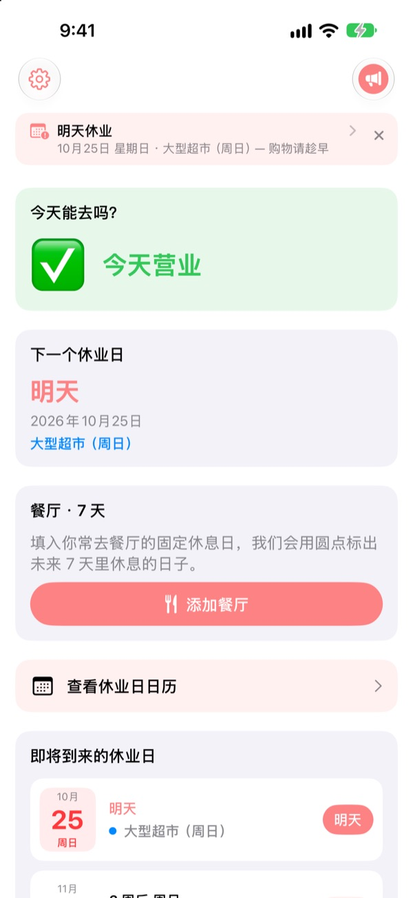
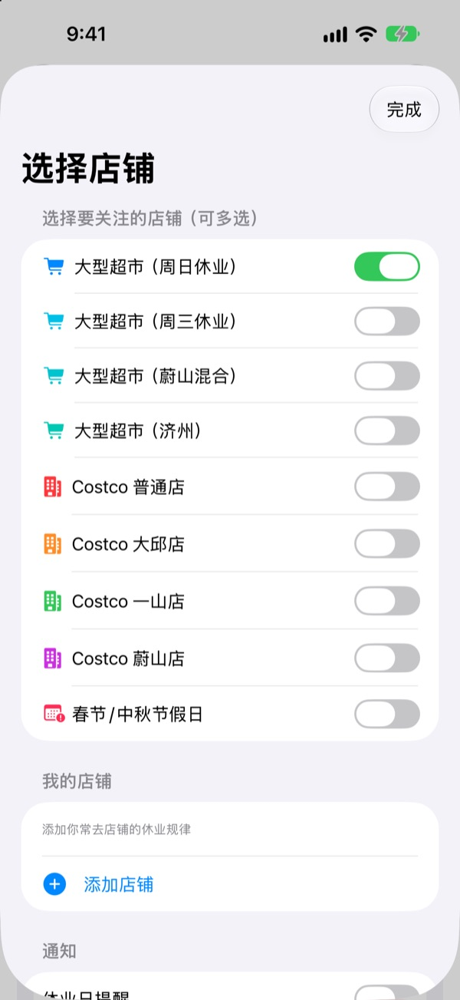
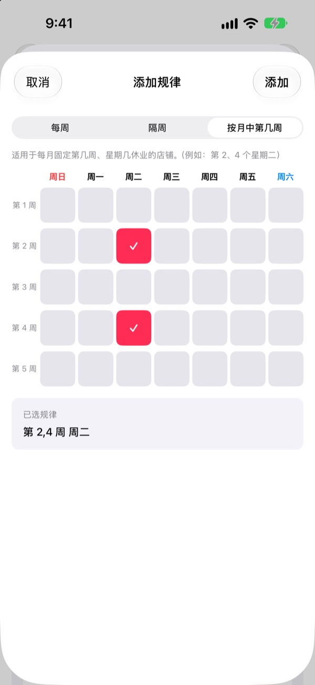
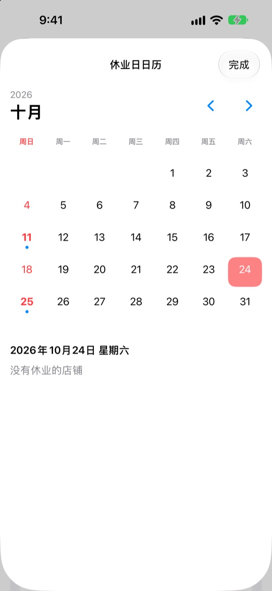
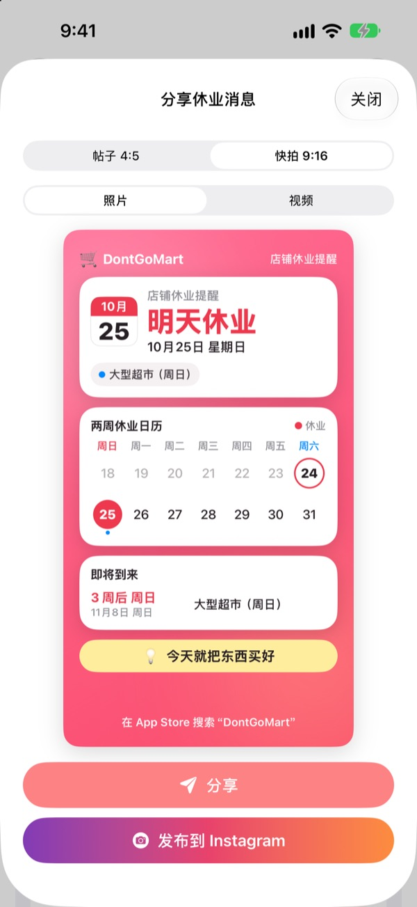

去超市之前，
先看看今天开不开门
打开应用，第一眼就能看到你选的门店今天是否营业。休业日快到时会提前提醒，再也不会白跑一趟。
所有功能免费，无需账户，没有广告。

用你常去的门店试试
选一家门店，马上看到今天是否营业、下一个休业日是哪天。计算规则与应用完全相同。
拎着购物袋到了门口，才发现关门了？
韩国大型超市的强制休业日，有的是第二、第四个星期日，有的是星期三，蔚山和济州又不一样；Costco 各分店也各不相同。DontGoMart 按你常去门店的规则算出休业日，先告诉你今天能不能去。
各地不同的休业日都算得准
周日休业、周三休业的门店都有，蔚山、济州这类休业日不同的地区也能选。Costco 普通店和大邱店、一山店、蔚山店可以分别选择。
春节和中秋当天的休业也会显示。可以同时关注多家门店。

家附近的超市和常去的餐厅也行
列表里没有的门店，可以按每周、隔周或每月第几周星期几来设定休息日，添加成你自己的超市。
餐厅只要粘贴从 Naver 地图分享的链接，或选一张餐厅信息页的截图，就会自动填好固定休息日。图片里的文字只在设备上识别。

用通知和小组件，不怕忘
可在休业前 1、2、3、7 天中选择，并在你想要的时间收到通知。休业前一天还会再提醒你：今天适合去采购。
主屏幕和锁定屏幕小组件能直接看到最近的休业日、本周日是否营业、餐厅未来 7 天的休息情况。日历里一个月的休业日一目了然。

一张卡片发到家庭群
把休业消息做成带两周日历和购物小贴士的卡片发出去。也能做成 Instagram 帖子和快拍尺寸，或者短视频。

三步就能开始
- 1
选择门店
打开你常去的超市和地区，可以选多家。
- 2
打开通知
设定提前几天、几点提醒。
- 3
放上小组件
不用打开应用，在主屏幕或锁定屏幕上就能看到。
各门店的休业规则
- 大型超市（周日休业）
- 第二、第四个星期日 · 大部分地区
- 大型超市（周三休业）
- 第二、第四个星期三 · 京畿部分地区、清州
- 大型超市（蔚山）
- 第二个星期三、第四个星期日
- 大型超市（济州）
- 第二个星期五、第四个星期六
- Costco 普通店
- 第二、第四个星期日
- Costco 大邱店
- 第二、第四个星期一 · 大邱店、大邱革新店
- Costco 一山店
- 第二、第四个星期三
- Costco 蔚山店
- 第二个星期三、第四个星期日
- 春节、中秋
- 当天休业
强制休业日由地方政府条例规定，可能会变动。如与实际不符，请发邮件告诉我们。
常见问题
休业日和实际不一样。
大型超市的强制休业日由地方政府条例规定，各地不同。请在设置中确认选择了符合所在地区的门店（周日休业、周三休业、蔚山、济州等）。如果仍然不对，请把超市名称和地区发邮件告诉我们，确认后会更新。
列表里没有我常去的超市怎么办？
可以添加为你自己的超市。按每周、隔周，或像第二、第四个星期日这样设定第几周星期几休息，然后保存。
餐厅的休息日没有正确填好。
通过 Naver 地图链接导入时，餐厅的地点页面上需要写有固定休息日。用截图导入时，请让“每周二休息”之类的文字出现在画面中。填好的内容在保存前都可以手动修改。
收不到通知。
请在 iPhone 的“设置”>“通知”>“DontGoMart”中确认已允许通知，并确认应用内的休业日提醒已打开。
小组件不更新。
打开一次应用，小组件信息就会刷新。如果还是没变，请删除小组件后重新添加。
打赏是什么？
DontGoMart 的所有功能都是免费的。咖啡、蛋糕、正餐打赏是用来支持开发者的，打赏后会看到感谢的话和显示累计次数的支持者徽章。
付款（退款等）问题该找谁？
App 内购买由 Apple 处理，退款请在 Apple 的报告问题页面（reportaproblem.apple.com）申请。其他问题欢迎发邮件。
个人信息怎么处理？
没有账户，不使用广告或追踪工具，截图里的文字也只在设备上识别。详情请看下方的隐私政策。
有问题或建议，请发邮件到 hyunho.lee.1993@gmail.com，我们通常 1～2 天内回复。